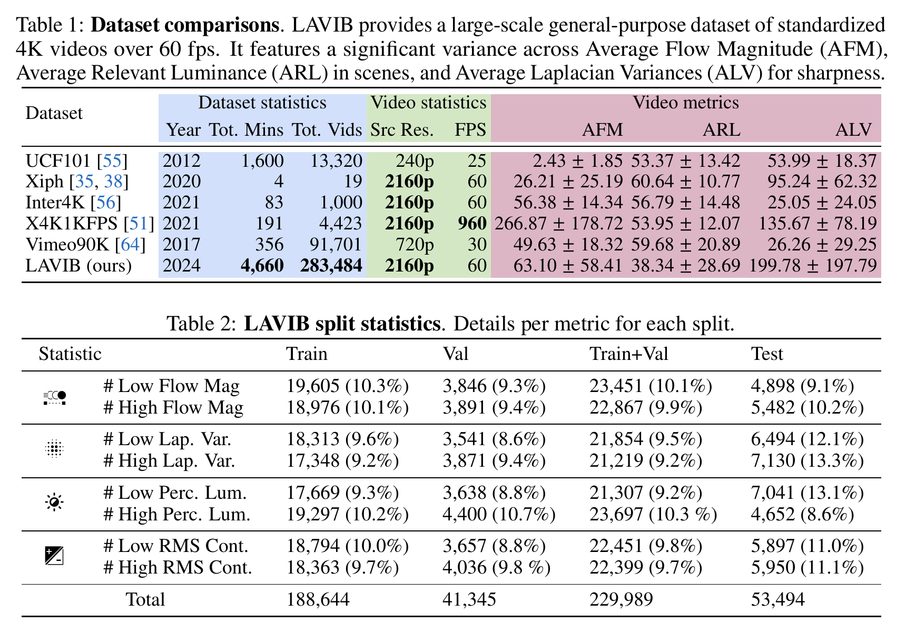
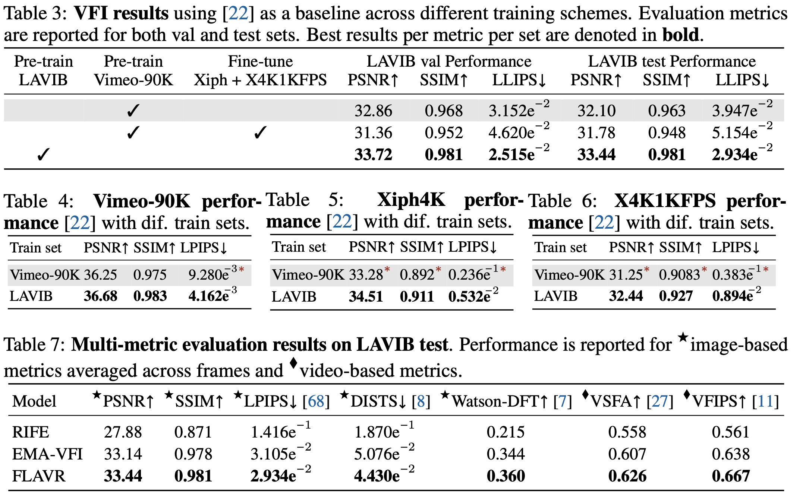

LAVIB: Large-scale Video Interpolation Benchmark
University of Twente, NL
Abstract
This paper introduces a LArge-scale Video Interpolation Benchmark (LAVIB) for the low-level video task of video frame interpolation (VFI). LAVIB comprises a large collection of high-resolution videos sourced from the web through an automated pipeline with minimal requirements for human verification. Metrics are computed for each video's motion magnitudes, luminance conditions, frame sharpness, and contrast. The collection of videos and the creation of quantitative challenges based on these metrics are under-explored by current low-level video task datasets. In total, LAVIB includes 283K clips from 17K ultra-HD videos, covering 77.6 hours. Benchmark train, val, and test sets maintain similar video metric distributions. Further splits are also created for out-of-distribution (OOD) challenges, with train and test splits including videos of dissimilar attributes.
LAVIB statistics
Four statistics are used to obtain segments, create splits, and define challenges.
Frame-pair motion. A significant challenge for VFI methods is learning to model cross-frame motion consistency in videos. The dataset comprises videos with diverse magnitudes; both high camera or object motion, and more static scenes. The Averaged Flow Magnitude (AFM) is used to quantify motion by spatio-temporally averaging optical flow.
Frame sharpness
Fast motions, light conditions, and camera focus can affect per-frame object sharpness in videos. Sourced videos vary in the sensors, lens, codex, and camera profiles used, all of which amount to variations in the sharpness. This results in highlighting or suppressing either object edges or sensory noise. The Laplacian of Gaussians (LoG) is a standardized kernel-based approach for highlighting regions of rapid change in pixel intensities. Given a video \( \mathbf{V} \) of dimensions \( \mathbb{R}^{D=T \times H \times W} \), with \(T\) frames, \(H\) height, and \(W\) width, it convolves a kernel with size \(K\) over each frame. ALV is formulated by applying LoG and averaging:
$$
\text{ALV}(\mathbf{V},\sigma,K) = \frac{1}{D}\sum_{r \in \mathbb{R}^{D}} \sum_{i=1}^{K}\sum_{j=1}^{K} \underbrace{-1\frac{1}{\pi \sigma^4} (1-\frac{i^2+j^2}{2\sigma^2})e^{-\frac{i^2+j^2}{2\sigma^2}}}_{\text{LoG}(i,j)} \; \underset{r-[i,j]}{\mathbf{V}}
$$
As the size of the kernel also factors the estimate, an ensemble of kernel sizes \( \mathcal{N}=\{3, 5, 7\} \) is used to calculate the final value \( \frac{1}{|\mathcal{N}|}\underset{K\in \mathcal{N}}{\sum}\text{ALV}(\mathbf{V},\sigma,K)\) with \(\sigma=1.4\).
Video contrast
Another characteristic of videos is the contrast between objects and backgrounds in scenes. Computationally, contrast relates to the difference between neighboring raw pixel values. The metric is formulated as the Average Root Mean Square (ARMS) difference between each pixel from each frame of \( \mathbf{V}\) and the corresponding pixel in the channel-averaged \(\overline{\mathbf{V}}\).
$$
\text{ARMS}(\mathbf{V}) = \frac{1}{T} \sum_{t\in \mathbb{R}^{T}}\sqrt{\frac{1}{HW}\sum_{s \in \mathbb{R}^{HW}}(\underset{t,s}{\mathbf{V}}-\underset{t,s}{\overline{\mathbf{V}}})}
$$
Luminance conditions. The perception of light in videos can be affected by the sensor's sensitivity or the camera's processing. In human vision, the perception of luminance is done over three bands of color. To account for the uneven perception of each band, a common standard for quantitively defining luminosity is the relevant luminance. In videos, the Average Relative Luminance (ARL) can be computed as the weighted sum for each color channel from video frames averaged over time.
Dataset

Dataset statistics include the number and total running times of videos. Video statistics relate to video information such as the resolution and frame rate. Average video metrics provide insights based on variance of motions, lighting conditions, and frame sharpness metrics. The difference in LAVIB video conditions and recording sensors is reflected by the high variance across metrics.
Explore
Examples of interpolated video segments from LAVIB OOD challenges with FLAVR. Use the slider to see the ground truth.
(Reload the page if videos become out of sync).
Low \( \rightarrow \) High Average Flow Magnitude (AFM)
Low \( \rightarrow \) High Average Laplacian Variance (ALV)
Low \( \rightarrow \) High Average Relative Luminance (ARL)
Low \( \rightarrow \) High Average Root Mean Square (ARMS)
High \( \rightarrow \) Low Average Flow Magnitude (AFM)
High \( \rightarrow \) Low Average Laplacian Variance (ALV)
High \( \rightarrow \) Low Average Relative Luminance (ARL)
High \( \rightarrow \) Low Average Root Mean Square (ARMS)
Results

Baselines. SSIM, PSNR, and LPIPS scores are reported on both LAVIB val and test sets across three training settings. FLAVR is used as the baseline model due to its fast processing times, strong results, and open-source codebase. Pre-training on LAVIB gives the best performance overall by increasing PSNR, and SSIM by +1.08 and +0.015 on average on both sets.
Generalization to related small-scale datasets. LAVIB is unique in having the largest number of diverse videos of both high resolution and high frame rates. LAVIB's large variance across videos enables learning VFI over different conditions which can benefit performance in smaller task-specific benchmark datasets.
Multi-metric results. Standard metrics for assessing the quality of interpolated video frames include PSNR, SSIM, and LPIPS. As the human judgment of the perceptual quality depends on high-order image structures and context an ensemble of metrics is used to provide a complete view of each method's performance on the LAVIB test set. Across statistics, both EMA-VFI and FLAVR perform comparably. A decrease in performance is observed with RIFE as its limited complexity can not adequately address VFI with large variations in settings across videos. Compared to FLAVR, PSNR and SSIM are decreased by -5.56 and -1.10 respectively, and LPIPs loss is increased from 0.029 to 0.146.
Citation
@article{stergiou2024lavib,
title={LAVIB: Large-scale Video Interpolation Benchmark},
author={Stergiou, Alexandros},
journal={arXiv preprint},
year={2024}
}